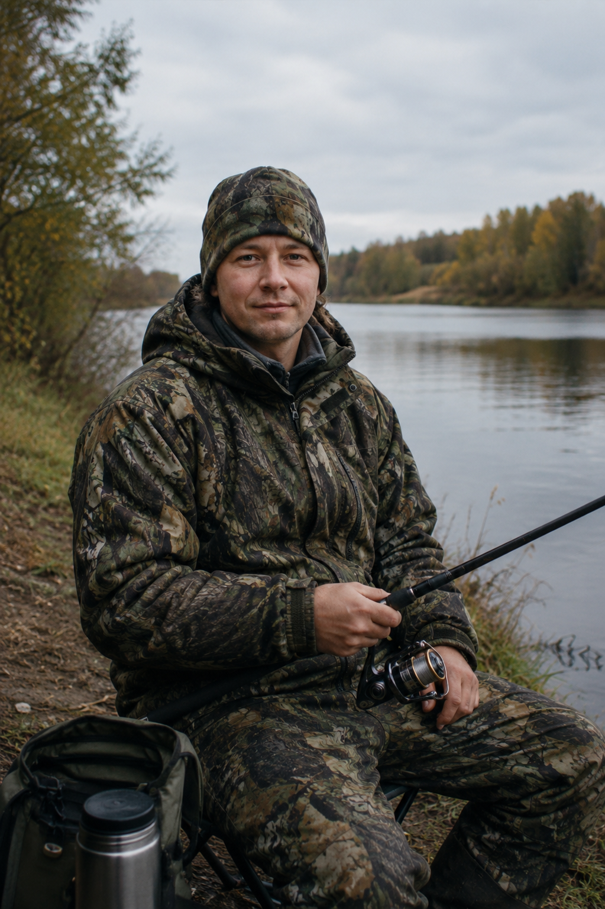
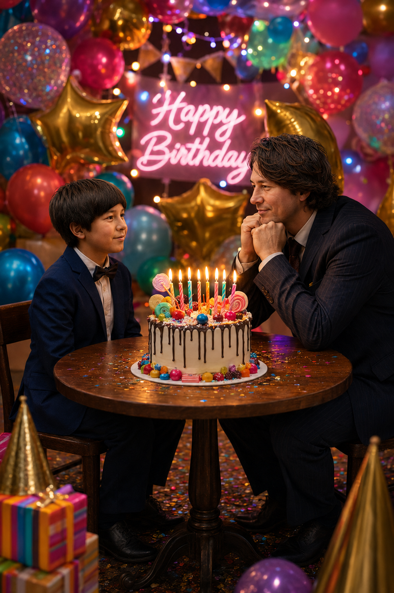
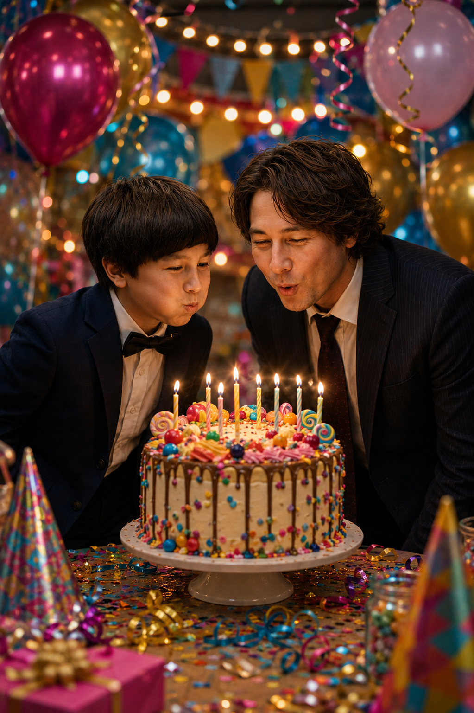
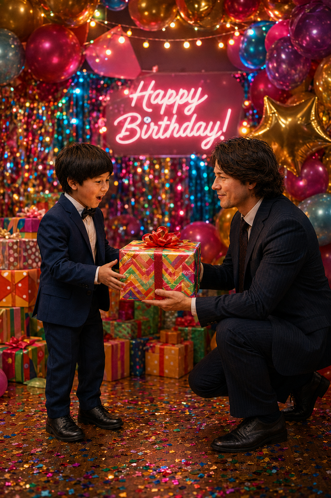
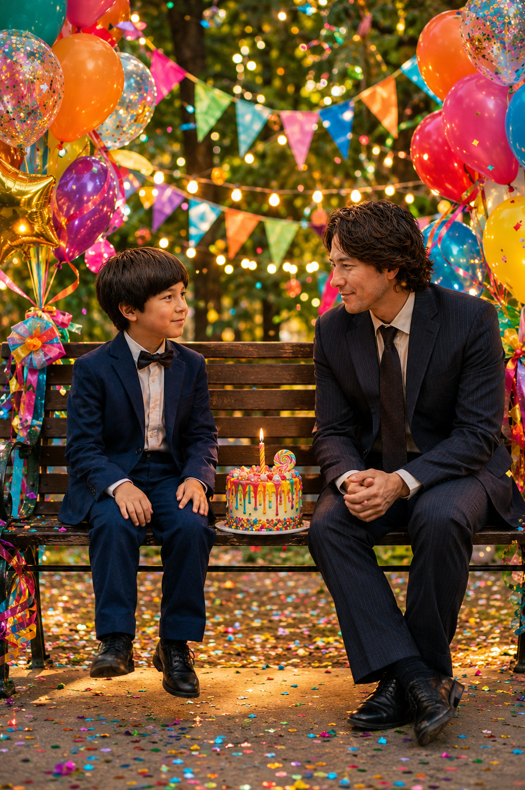
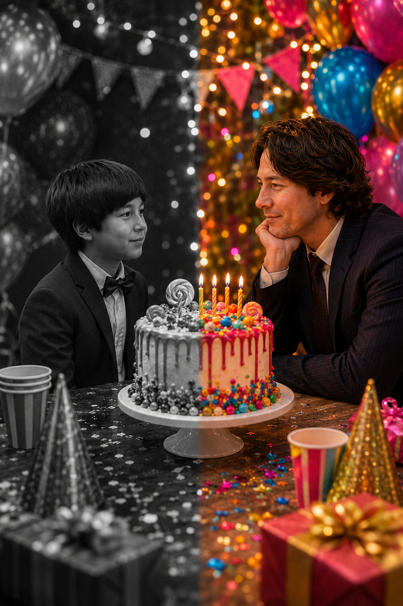

Промтзилла
Как сделать фото с собой в детстве на день рождения через ИИ
Загрузи детское фото и актуальное — нейросеть объединит их в одну сцену. 5 готовых промтов для GPT Image 2 и Nano Banana PRO.
Исходные фото

Детское фото

Актуальное фото
📋 Пошаговая инструкция
- 1Перейди на study24.ai и открой Nano Banana PRO или используй GPT Image 2
- 2Загрузи два фото — детское и актуальное. Лучше всего подходят чёткие фото анфас с хорошим освещением
- 3Выбери сцену ниже, скопируй промт и вставь в поле ввода
- 4Нажми отправить и подожди 20–30 секунд — нейросеть объединит оба фото в одну сцену
- 5Если лица изменились — добавь к промту: «сохрани черты лица с загруженных фото точно»
- 6Скачай результат и поделись в соцсетях
Промт 1 — Классика в студии

РезультатКлассика в студии
RU
Загружаю два фото одного человека: детское и актуальное. Создай единую реалистичную фотографию. Композиция: два персонажа сидят друг напротив друга за небольшим круглым столом. Слева: детская версия (из детского фото) — смотрит вправо с невинной улыбкой. Одета нарядно — яркое праздничное платье или нарядный костюм для ребёнка. Справа: взрослая версия (из актуального фото) — сидит, подперев подбородок руками, смотрит на ребёнка с тёплой улыбкой. Одета нарядно — яркое элегантное платье или официальный костюм. В центре на столе: высокий праздничный торт с яркими свечами и украшениями. Фон: яркий праздничный — разноцветные воздушные шары, конфетти, гирлянды с цветными огнями. Цветовая палитра: насыщенная, яркая, праздничная — розовый, золотой, красный, синий. Освещение: яркое праздничное, живое, без тёмных теней. Стиль: профессиональная эмоциональная фотография, фотореализм. Лица обоих персонажей сохранить точно — не изменять черты.
EN
I'm uploading two photos of the same person: a childhood photo and a current photo. Create a single realistic image. Composition: two figures sitting across from each other at a small round table. Left: childhood version (from the childhood photo) — looking right with an innocent smile. Dressed festively — a bright party dress or smart outfit for a child. Right: adult version (from the current photo) — sitting with chin resting on hands, looking warmly at the child. Dressed elegantly — a bright elegant dress or formal suit. Center: a tall festive birthday cake with colorful candles and decorations. Background: vibrant and celebratory — colorful balloons, confetti, string lights in multiple colors. Color palette: rich, bright, festive — pink, gold, red, blue. Lighting: bright, lively party lighting, no dark shadows. Style: professional emotional photography, photorealistic. Preserve both faces exactly — do not alter features.
Промт 2 — Задуваем свечи вместе

РезультатЗадуваем свечи вместе
RU
Загружаю два фото одного человека: детское и актуальное. Создай единую реалистичную фотографию. Композиция: детская и взрослая версия стоят рядом у праздничного стола и вместе задувают свечи на торте. Слева: ребёнок (из детского фото) — щёки надуты, глаза прищурены от радости. Одет нарядно — яркое праздничное платье или нарядный костюмчик. Справа: взрослая версия (из актуального фото) — тоже наклонилась к торту, смеётся. Одета нарядно — яркое элегантное платье или официальный костюм. Торт в центре: высокий, ярко украшенный, со свечами. Фон: яркий праздничный — разноцветные шары, серпантин, конфетти, гирлянды с огнями. Цветовая палитра: насыщенная, яркая — розовый, жёлтый, синий, золотой. Освещение: яркое праздничное, блики от свечей на лицах. Стиль: живой, радостный, фотореалистичный. Лица обоих персонажей сохранить точно — не изменять черты.
EN
I'm uploading two photos of the same person: a childhood photo and a current photo. Create a single realistic image. Composition: the child and adult versions stand side by side at a festive table, both blowing out candles on a birthday cake together. Left: the child (from childhood photo) — cheeks puffed, eyes squinting with joy. Dressed festively — a bright party dress or smart outfit for a child. Right: adult version (from current photo) — also leaning toward the cake, laughing. Dressed elegantly — a bright elegant dress or formal suit. Cake in the center: tall, colorfully decorated, with candles. Background: vibrant and celebratory — colorful balloons, streamers, confetti, string lights. Color palette: rich and bright — pink, yellow, blue, gold. Lighting: bright party lighting, candlelight glow on both faces. Style: lively, joyful, photorealistic. Preserve both faces exactly — do not alter features.
Промт 3 — Взрослый дарит подарок ребёнку

РезультатВзрослый дарит подарок ребёнку
RU
Загружаю два фото одного человека: детское и актуальное. Создай единую реалистичную фотографию. Композиция: взрослая версия стоит на колене и протягивает красиво упакованный подарок своему детскому я. Слева: ребёнок (из детского фото) — глаза широко открыты от удивления и радости, тянется к подарку. Одет нарядно — яркое праздничное платье или нарядный костюмчик. Справа: взрослая версия (из актуального фото) — улыбается тепло, протягивает ярко упакованную коробку с бантом. Одета нарядно — яркое элегантное платье или официальный костюм. Фон: яркий праздничный — разноцветные шары, стопки подарков, гирлянды, конфетти. Цветовая палитра: насыщенная, яркая — красный, золотой, зелёный, розовый. Освещение: яркое праздничное, живое. Стиль: эмоциональный, трогательный, фотореалистичный. Лица обоих персонажей сохранить точно — не изменять черты.
EN
I'm uploading two photos of the same person: a childhood photo and a current photo. Create a single realistic image. Composition: the adult version kneels down and hands a beautifully wrapped gift to their childhood self. Left: the child (from childhood photo) — eyes wide with surprise and joy, reaching for the gift. Dressed festively — a bright party dress or smart outfit for a child. Right: adult version (from current photo) — smiling warmly, holding out a brightly wrapped box with a bow. Dressed elegantly — a bright elegant dress or formal suit. Background: vibrant and celebratory — colorful balloons, stacks of gifts, string lights, confetti. Color palette: rich and bright — red, gold, green, pink. Lighting: bright, lively party lighting. Style: emotional, touching, photorealistic. Preserve both faces exactly — do not alter features.
Промт 4 — Вместе на скамейке в парке

РезультатВместе на скамейке в парке
RU
Загружаю два фото одного человека: детское и актуальное. Создай единую реалистичную фотографию. Композиция: ребёнок и взрослая версия сидят рядом на украшенной скамейке. Слева: ребёнок (из детского фото) — болтает ногами, смотрит на взрослого с любопытством. Одет нарядно — яркое праздничное платье или нарядный костюмчик. Справа: взрослая версия (из актуального фото) — смотрит на ребёнка с нежной улыбкой. Одета нарядно — яркое элегантное платье или официальный костюм. Между ними на скамейке: яркий торт или кекс со свечой. Фон: праздничный — разноцветные шары привязаны к скамейке, гирлянды с яркими огнями, конфетти в воздухе. Цветовая палитра: яркая, насыщенная, летняя — жёлтый, розовый, синий, зелёный. Освещение: яркое дневное с праздничными огнями. Стиль: нежный, радостный, фотореалистичный. Лица обоих персонажей сохранить точно — не изменять черты.
EN
I'm uploading two photos of the same person: a childhood photo and a current photo. Create a single realistic image. Composition: the child and adult version sit side by side on a decorated bench. Left: the child (from childhood photo) — swinging legs, looking up at the adult with curiosity. Dressed festively — a bright party dress or smart outfit for a child. Right: adult version (from current photo) — looking at the child with a tender smile. Dressed elegantly — a bright elegant dress or formal suit. Between them on the bench: a bright birthday cake or cupcake with a candle. Background: celebratory — colorful balloons tied to the bench, bright string lights, confetti in the air. Color palette: bright, vibrant, summery — yellow, pink, blue, green. Lighting: bright daylight with festive lights. Style: tender, joyful, photorealistic. Preserve both faces exactly — do not alter features.
Промт 5 — Чёрно-белое и цветное

РезультатРазделённый кадр
RU
Загружаю два фото одного человека: детское и актуальное. Создай единую реалистичную фотографию в стиле split — левая половина чёрно-белая, правая яркая цветная. Слева: детская версия (из детского фото) в чёрно-белом стиле — смотрит вправо с мягкой улыбкой. Одета нарядно — праздничное платье или костюмчик. Справа: взрослая версия (из актуального фото) в ярком цвете — подперла подбородок рукой, смотрит на ребёнка с тёплой улыбкой. Одета нарядно — яркое элегантное платье или официальный костюм. В центре на столе: яркий праздничный торт со свечами — ЧБ на левой половине, цветной на правой. Фон: праздничный — шары, гирлянды, конфетти. Левая половина фона ЧБ, правая — яркая и насыщенная. Цветовая палитра правой половины: яркая, насыщенная — розовый, золотой, синий. Освещение: яркое праздничное. Стиль: профессиональный, эмоциональный, фотореалистичный. Лица обоих персонажей сохранить точно — не изменять черты.
EN
I'm uploading two photos of the same person: a childhood photo and a current photo. Create a single realistic split-style image — left half black and white, right half bright and colorful. Left: childhood version (from childhood photo) in black and white — looking right with a soft smile. Dressed festively — a party dress or smart outfit for a child. Right: adult version (from current photo) in vivid full color — chin resting on hand, looking at the child with a warm smile. Dressed elegantly — a bright elegant dress or formal suit. Center on the table: a bright festive birthday cake with candles — black and white on the left half, colorful on the right. Background: celebratory — balloons, string lights, confetti. Left half in black and white, right half bright and vivid. Color palette of the right half: bright and rich — pink, gold, blue. Lighting: bright, lively party lighting. Style: professional, emotional, photorealistic. Preserve both faces exactly — do not alter features.
Теги
Эту страницу можно использовать онлайн: промпт подходит для работы с ИИ и нейросетью.